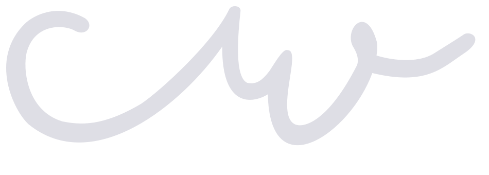

Supplied file
The path is intact, but it comes within about one SVG unit of the right and bottom edges. The export has almost no built-in padding.
Three close edits to the existing mark. Each keeps the C bowl, the rising connection and the two W valleys. The comparison uses the mark's current pale gray fill.
The path is intact, but it comes within about one SVG unit of the right and bottom edges. The export has almost no built-in padding.

Only the canvas changes here. This separates the tight export framing from the shape questions: C length and terminal softness.
48 px header / 160 px / large
Work About ContactThe generous C sweep is the signature. Its long climb and rounded ends feel softer once the mark becomes a graphic rather than a small nav detail.
The C climb is compressed and its opening gets one angled cut. The W retains its softer, handwritten finish, so the edit has a point of tension without making every turn sharp.
A clean diagonal gap turns the continuous stroke into two parts. It makes the CW reading more explicit at medium size, though the gap becomes a small nick in the header.
Both ends stop on angled edges and the W tail is shorter. This has the firmest large silhouette, but the final upstroke loses some of the original flourish.
The decision is whether this should stay one continuous gesture or read as two distinct letters. I recommend the continuous gesture: 01 fixes the C's reach and adds one sharp edge without losing what works in the header. Choose 02 if a more literal CW reading matters more.